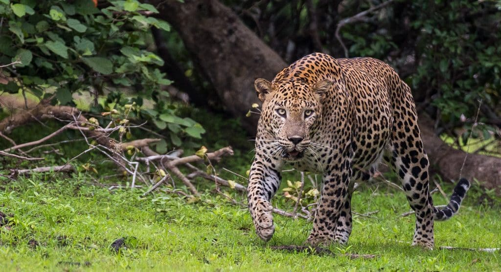
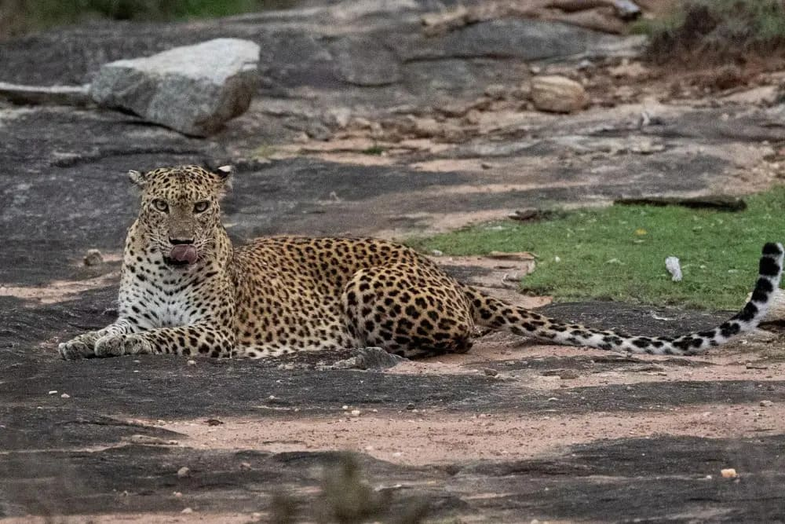

Yala National Park
Yala National Park, undoubtedly the crown jewel of safari parks in Sri Lanka, stands out as the top spot for wildlife enthusiasts, particularly those captivated by the elusive leopards. Recognized globally for its exceptionally high densities of these magnificent predators, Yala offers an unparalleled safari experience in the heart of its pristine wilderness. The park's reputation as the land of the leopard is well-deserved, with sightings of these beautiful cats strolling across open plains or perched atop rocky outcrops being signature experiences. Yala has been home to iconic leopards, such as the legendary "Chaitya Male" and Hamu, known for their strength and prowess. Currently, ongoing studies have identified over 130 individual leopards within the park's relatively small area of 142 square kilometers. Notably, new individuals continue to be identified, emphasizing the remarkable density of leopards in this wildlife haven. Some of the prominent leopard personalities in the present era include Lucas, Julius, Harak Hora, and Aster. Visitors to Yala National Park have the opportunity to delve deeper into the world of leopards at the informative "Leopard Center" within the park. Here, they can enhance their understanding of these predators, compare their own sightings with a virtual database, and even attempt to identify the leopards they encounter during their safari adventures. As you embark on a safari through Yala National Park, be prepared to witness the sleek and stealthy movements of leopards, creating unforgettable moments in a sanctuary where the connection between these graceful creatures and their diverse natural habitat is truly awe-inspiring.
Wilpattu National Park
Wilpattu National Park, Sri Lanka's largest sanctuary located on the North-Western end of the island. Contrasting with Yala, Wilpattu's landscape is dominated by dense dark forests and natural lakes called Villus. Within this pristine reserve, a thriving population of majestic leopards roams, offering rare glimpses into their natural behaviors. Though sightings are challenging in the dense forests, the reward is immense when these elusive predators grace the roads or the open sand-rimmed lakes. Closed during the civil war, Wilpattu opened to the public in 2010. Over time, habituated leopards have made the park increasingly popular among wildlife enthusiasts seeking a quieter experience than Yala. Notable leopards include "Prince" or "Natta," once the most photographed leopard in Sri Lanka, and the fearless Nelum Wila Male, a star of the park. Among females, "Cleopatra," a playful cub turned successful mother, captivates lucky visitors in the Mahapatessa area. Wilpattu National Park promises not only thrilling leopard encounters but also the rich stories and personalities defining life in this untamed wilderness.
Kumana National Park
Kumana National Park, an enchanting realm of mystery and wonder nestled on the far eastern corner of the island. Connected to Yala and part of the same ecosystem, Kumana offers a unique and secluded experience for nature enthusiasts. A leisurely drive, albeit a lengthy one, leads you to this captivating sanctuary, which was initially renowned as a bird haven with numerous species nesting in the waters of Kumana Villu. However, in the last decade, the park has witnessed a surge in leopard sightings, adding an exciting dimension to its allure. Legend has it that the leopards of Kumana are dubbed "man-eaters," with the leopards of Lenama, an area within the park, acquiring mythical status for their supposed larger and deadlier nature. In reality, these leopards are the same magnificent creatures found in Yala. The park has experienced a few unfortunate incidents, such as a construction worker being taken and eaten by a large male leopard in 2019. Subsequently, another leopard attacked a farmer in Panama, resulting in a fatality. Despite these isolated cases, the allure of spotting leopards in Kumana continues to grow, as the animals become more accustomed to their surroundings. What sets Kumana apart is its serene ambiance, offering a level of privacy and escape from large crowds. The park's remoteness, coupled with its challenging accessibility, has transformed it into one of Sri Lanka's best-kept secrets. As you embark on a safari through Kumana, be prepared for an unparalleled wildlife encounter, where the elusive leopards gracefully roam in the shadows, embodying the untamed beauty of this hidden gem.
Leopard Conservation Challenges in Sri Lanka
Threat 1: Illegal Killing for Body Parts
The recent killing of a fully grown male Sri Lankan leopard at Uda Walawe National Park has raised concerns about the illegal hunting of leopards for their claws and teeth, threatening the already dwindling population. The consequences of this threat include a decline in the leopard population, which is estimated to be around 1,000 in Sri Lanka. The illegal trade in leopard body parts not only disrupts the ecosystem but also undermines conservation efforts.
Mechanisms to Reduce the Threat:
-
Legal Protection:
- The Sri Lankan leopard has been legally protected since 1964, with the last amendment in 2009 categorizing it as a "strictly protected species."
- The law prohibits any harm, injury, or killing of leopards, along with the sale or trade of their body parts.
- Offenses related to leopard protection are considered cognizable and non-bailable.
-
Enforcement Challenges:
- Despite robust legal provisions, the Department of Wildlife Conservation (DWC) faces challenges in enforcement due to understaffing.
- The DWC lacks the capacity to proactively protect species, and the police, who are also empowered, face issues related to expertise and training.
-
Capacity Building:
- There is a need to address the capacity issues within the DWC, including more staffing and specialized training.
- Training programs should cover areas such as genetic testing, animal forensic studies, and producing expert evidence during prosecution.
-
Expert Witnesses:
- The 2009 amendment allows experienced DWC officers to become "expert witnesses" in prosecutions, emphasizing the need for additional training to maximize this provision.
Threat 2: Lack of Comprehensive Conservation Plan
The conservation and protection of leopards in Sri Lanka face challenges beyond illegal killing, including a lack of comprehensive planning and proactive measures. Despite the significance of leopards in the tourism sector, authorities have yet to develop a cohesive plan of action to safeguard the species for future generations.
Mechanisms to Reduce the Threat:
-
Tourism Dimension:
- A comprehensive plan should involve collaboration between wildlife authorities and tourism sectors to protect leopards and sustain wildlife tourism.
- Considering the distribution of leopards across different zones, conservation actions should address populations both within and outside protected areas.
-
Population Conservation:
- With fewer than 1,000 leopards remaining, urgent management actions are required to address intentional and accidental killings, as well as threats to the population's viability.
- The plan should cover conservation and management actions for leopards in various ecological zones, including low-country wet and dry zones, and the hill country.
-
Endangered Status:
- Recognizing the Sri Lankan leopard as an endemic subspecies on the brink of extinction, urgent conservation measures are crucial to prevent further decline.
- The inclusion of the leopard in the National Red Data List highlights its threatened status within Sri Lanka, necessitating immediate intervention.